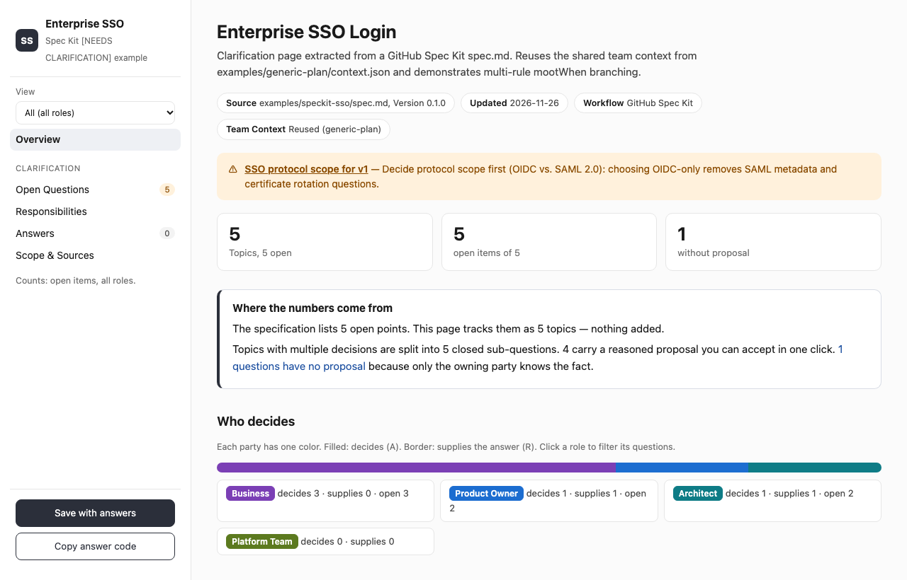

Multiplayer /clarify for non-Git stakeholders. Open any demo below to experience how Business, Product, and Architecture resolve open points offline with a single decider per question, mootWhen branching, and a PKL1: paste-back answer code.
Extracted from 5 [NEEDS CLARIFICATION] markers. Demonstrates two independent mootWhen branches (OIDC vs. SAML, JIT vs. pre-invited).
Minimal plan.md without Use Case scenario tables. Shows sync vs. async branching, GDPR/PII ownership, and fact vs. proposal split.
Async stakeholder sign-off for an OpenSpec brownfield delta proposal before /opsx:apply, consulting Platform only on queue retention.
Anonymised production feature-set: 22 open points + 5 unprovable statements across 7 roles narrowed down to 9 actual Business decisions.
